串口屏常用接口型号说明
XH2.54*4pin接口说明
XH2.54*4pin实物图片
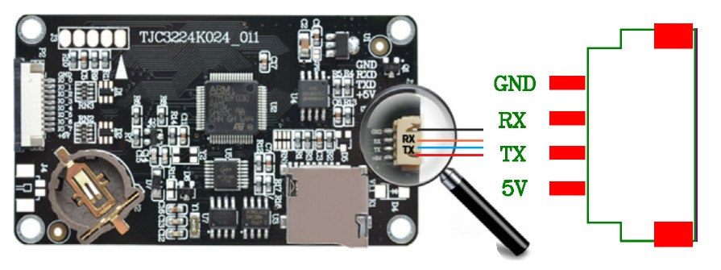
XH2.54*4pin连接器母座说明
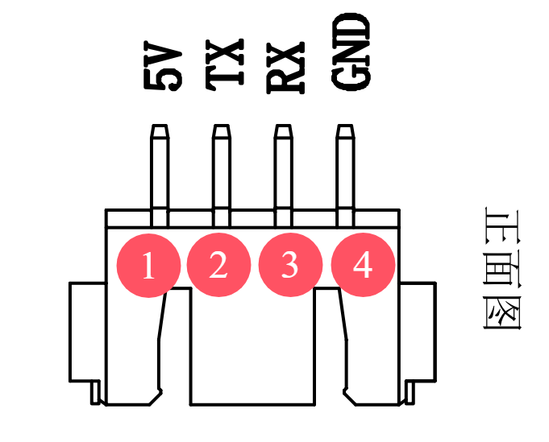
以下举例的为兼容型号
JST连接器公司的4pin 2.54间隔连接器母座，其产品型号为 S4B-XH-SM4-TB
HC(虹成电子)的4pin 2.54间隔连接器母座，其产品型号为 HCZZ0021-4
HCTL(华灿天禄)的4pin 2.54间隔连接器母座，其产品型号为 HC-XH-4AWT
下方截图仅做参考，非购买指南。
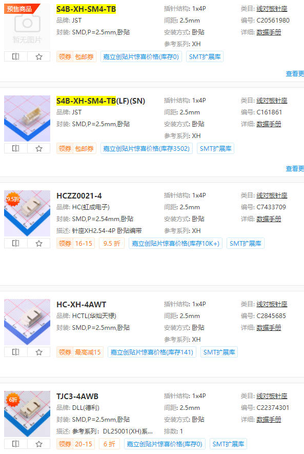
XH2.54*4pin连接器端子说明
胶套： XHP-4
端子： SXH-001T-P0.6
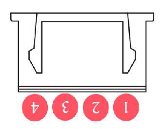
喇叭（ph1.25*2pin）接口说明
ph1.25*2pin实物图片
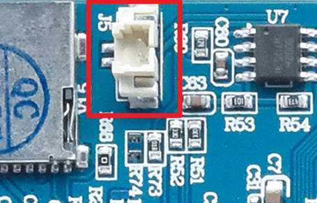
ph1.25*2pin连接器母座说明
型号 PH1.25-2p （立贴）
molex原厂立贴编号 533980271
可以在立创商城或者淘宝直接搜索 533980271
兼容型号官网链接 https://www.molex.com/zh-cn/products/part-detail/533980271
molex原厂卧贴编号 532610271
可以在立创商城或者淘宝直接搜索 532610271
兼容型号官网链接 https://www.molex.com/zh-cn/products/part-detail/532610271
下方截图仅做参考，非购买指南。
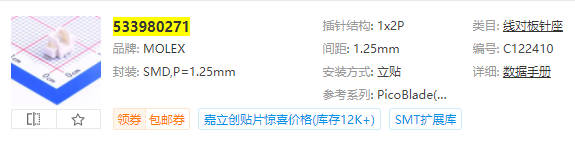
ph1.25*2pin连接器端子说明
molex原厂编号 510210200
兼容型号官网链接 https://www.molex.com/zh-cn/products/part-detail/510210200
可以在立创商城或者淘宝直接搜索 510210200
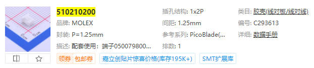
外部IO（FPC1.0 * 10pin）接口说明
FPC1.0 * 10pin连接器说明
类型：FPC连接器
锁定特性：抽屉式
触点类型：下接
触点数量：10P
间距：1.0mm
安装方式：卧贴
下方截图仅做参考，非购买指南。
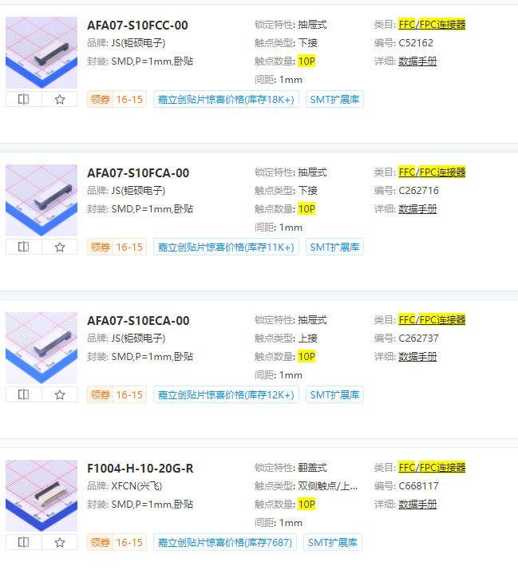
FPC1.0 * 10pin排线说明
类型：FFC连接线(柔性扁平线缆)
总PIN数：10P
间距：1.0mm
触点：购买时需注意两端的触点方向是同向或反向(将排线展平时,金手指触点是否在同一面)
大尺寸高电压串口屏供电接口（HY2.0 8pin）接口说明
HY2.0 8pin实物图片
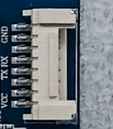
HY2.0 8pin连接器母座说明
插针结构：1x8P
间距：2mm
安装方式：卧贴
下方截图仅做参考，非购买指南。
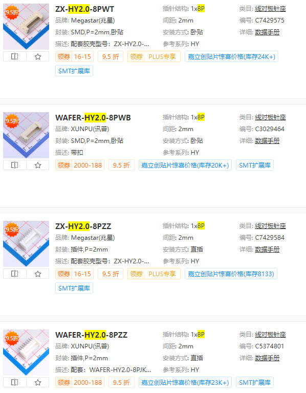
HY2.0 8pin连接器端子说明
胶套： WAFER-HY2.0-8PJK
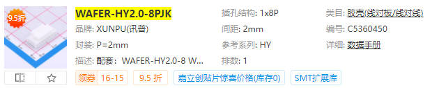
端子： ZX-HY2.0-DZ
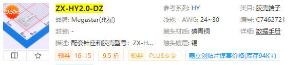
ph1.25*4pin连接器母座说明
用于小尺寸的屏幕，例如x2系列圆形屏
立贴兼容型号：molex 533980471
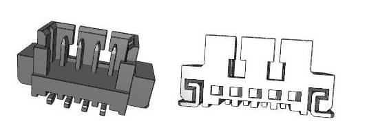
兼容型号官网链接 https://www.molex.com/zh-cn/products/part-detail/533980471
可以在立创商城或者淘宝直接搜索 533980471
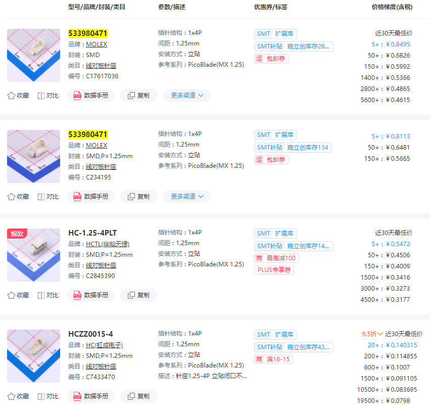
卧贴兼容型号：molex 532610471
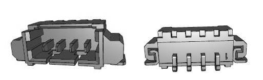
兼容型号官网链接 https://www.molex.com/zh-cn/products/part-detail/532610471
可以在立创商城或者淘宝直接搜索 532610471
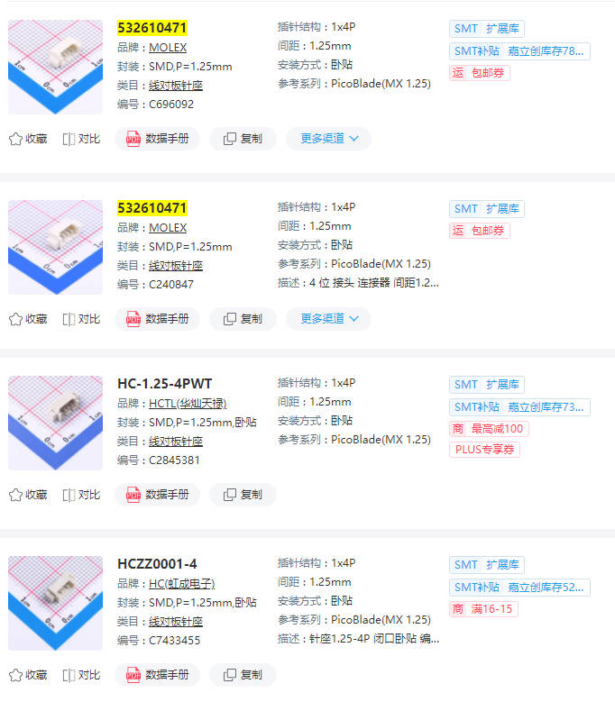
ph1.25*4pin连接器端子说明
立贴兼容型号：molex 510210400
兼容型号官网链接 https://www.molex.com/zh-cn/products/part-detail/510210400
可以在立创商城或者淘宝直接搜索 510210400
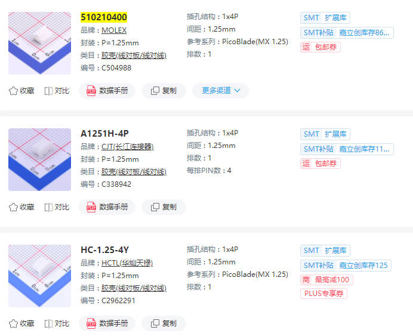